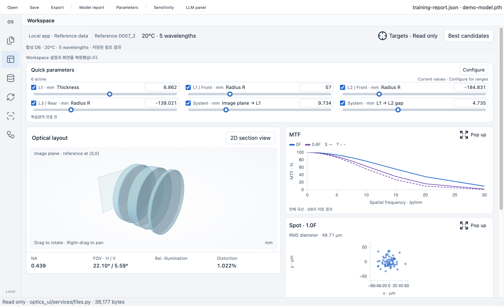
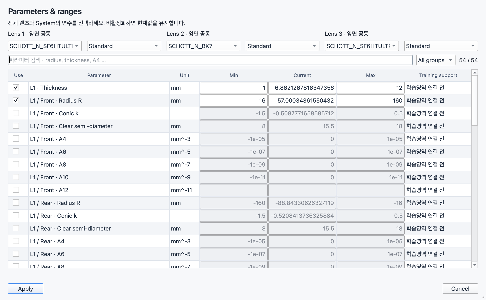

ZIP 내려받기
v1.1.0 Releases에서 Optics-Studio-v1.1.0.zip을 받아 쓰기 가능한 폴더에 모두 압축 해제합니다.
왼쪽 메뉴로 작업을 이동하고, 넓은 파라미터 창과 독립 분석창에서 설계를 살펴보세요. Optics Studio v1.1.0의 사용 흐름을 안내합니다.
파라미터 편집은 렌즈 형상에 반영됩니다. 새 MTF·Spot·NA·FOV를 예측하거나 Zemax·학습을 실행하는 백엔드는 TBU입니다. TBU는 아직 연결되지 않은 기능이라는 뜻입니다.
v1.1.0 Releases에서 Optics-Studio-v1.1.0.zip을 받아 쓰기 가능한 폴더에 모두 압축 해제합니다.
Windows 11 x64 · 표준 Python 3.10–3.14 64비트. 3.12 권장, 3.13도 사용할 수 있습니다. 압축을 푼 폴더에서 실행하세요.
py -3 -m pip install -r requirements.txtrun_windows.cmd를 더블클릭하거나 같은 Python으로 실행합니다.
py -3 launch.pypy -3 launch.py --check로 Python·라이브러리·화면 파일을 확인하세요. Python이 여러 개면 설치와 실행에 같은 버전을 지정합니다. 예: py -3.13 -m pip install -r requirements.txt, py -3.13 launch.py.
py가 없다면 지원되는 Python의 python 명령을 사용하세요. Python·Qt·가상환경은 ZIP에 포함하지 않고 자동 설치하지도 않습니다. Node.js·PyTorch·CUDA·Zemax는 이 UI를 실행하는 데 필요하지 않습니다. 현재 PySide6 의존성의 지원 범위를 벗어난 Python 3.9 이하·3.15 이상과 free-threaded 빌드는 지원하지 않습니다.
WebGL2를 사용할 수 없는 환경에서는 안내와 함께 2D 단면으로 전환됩니다. 새 버전의 Windows 11 실기기·DPI·GPU 검증은 별도로 필요합니다. 과거 버전의 검증을 v1.1.0의 실기기 검증으로 해석하지 마세요.
examples/local-demo/training-report.json을 선택합니다. .pth를 직접 고르는 방식이 아닙니다. 리포트가 참조하는 모델·DB 파일의 이름과 상대 위치를 유지하세요.
examples/local-demo/target.json을 선택합니다. 목표 JSON은 앱에서 읽기 전용으로 확인합니다.
참조 케이스와 분석 조건을 확인한 뒤 편집합니다. 상단 Open은 Save로 저장한 세션을 여는 기능입니다.
예시 DB는 합성 데이터이며 모델 파일은 파일 연결 확인용 더미입니다. 학습된 모델이나 Zemax 검증 결과가 아닙니다. demo.optics.json은 내부 파일 서비스 예제이므로 처음 여는 세션으로 사용하지 마세요. 리포트를 연결한 뒤 직접 Save한 파일을 사용합니다.
Workspace · Explorer · Update model · Add Zemax Sim · Auto design · DB tailoring은 왼쪽 메뉴로 이동합니다. 닫기 버튼이 있는 탭은 Explorer에서 연 코드 파일에만 사용합니다.

v1.1.0 실제 앱 · macOS 개발 환경 · 합성 데이터. Windows 창 테두리와는 다릅니다. 클릭하면 원본 크기로 열립니다.
Open folder…로 폴더를 선택하고 파일을 엽니다. 각 탭을 이동하거나 X로 닫을 수 있습니다. Wrap lines로 긴 줄 표시를 조정합니다. 앱 안의 코드는 읽기 전용입니다.
VS Code가 설치되어 있으면 선택한 파일을 외부 VS Code로 엽니다. 이 앱의 Explorer가 코드 실행이나 덮어쓰기를 수행하는 것은 아닙니다.
상단 버튼 또는 Ctrl+Alt+B로 오른쪽 패널을 여닫습니다. 초안은 세션에 저장되지만 답변·인증·도구 실행은 연결 전입니다.
상단 Sensitivity를 눌러 행렬과 Sobol 막대 영역을 표시합니다. 경계를 드래그해 광학 작업 화면과 분석 영역의 높이를 조절합니다.
상단 Parameters… 또는 Workspace의 Configure parameters로 창을 엽니다. System과 모든 렌즈의 변수를 함께 보면서 활성 여부와 Min / Current / Max를 조절합니다.

v1.1.0 네이티브 Parameters 창. macOS에서 촬영한 실제 화면이며 Apply 전까지 초안으로 편집합니다.
검색어와 그룹 필터로 변수를 찾고 Use를 선택합니다. 렌즈별 Material과 Standard / Even Asphere를 고릅니다. 앞·뒤 면은 같은 표면 종류를 사용합니다.
Min / Current / Max를 입력합니다. 변경한 범위에서 Current가 벗어나면 가까운 경계로 조정합니다. 비활성화하면 현재값을 유지합니다. 현재 면 종류에 쓰이지 않는 계수와 A12는 편집할 수 없습니다.
Apply는 초안 전체를 검증하고 성공한 뒤 창을 닫습니다. 오류가 있으면 입력값과 창을 유지합니다. Cancel은 초안만 버립니다. 창을 연 뒤 다른 설계를 적용했다면 창을 다시 열어 새 설계를 기준으로 조절하세요.
| 구분 | 항목 |
|---|---|
| System | 이미지면과 렌즈 사이 거리, 렌즈 사이 간격 |
| 각 렌즈 | Material, Standard / Even Asphere, Thickness |
| 각 면 | Radius R, Conic k, Clear semi-diameter, A4·A6·A8·A10 |
| 현재 범위 | 렌즈 3개 고정. A12는 공란. 다른 광학계 템플릿은 TBU |
적용 후 Workspace의 Quick parameters에서 선택 변수의 현재값을 슬라이더와 숫자로 빠르게 조절합니다. 전체 변수 선택과 범위 설정은 큰 Parameters 창에서 합니다.
조건부 학습 범위와 예측 신뢰도는 아직 계산하지 않습니다. 화면의 색이나 예시 구간을 실제 모델의 신뢰도로 해석하지 마세요.
왼쪽 드래그로 회전, 오른쪽 드래그로 이동, 휠로 확대·축소합니다. 2D section view를 눌러 단면으로 바꿉니다.
이미지면 (0, 0) 기준 좌표를 마우스로 확인하고 확대·축소합니다. Chief / Marginal 표시와 Stop을 조절할 수 있습니다.
Stop은 기본적으로 L3 Rear 면을 따라가며 직접 옮기면 절대 위치를 유지합니다. 로컬 광선 표시는 현재 형상과 굴절률을 사용하는 기하학 계산입니다. Zemax 성능 검증이나 ML 예측이 아닙니다.
각 그래프의 Pop up을 누르면 독립 분석창이 열립니다. MTF와 Spot을 동시에 열어 나란히 놓고 Workspace를 계속 조작할 수 있습니다.
| 결과 | 읽는 기준 |
|---|---|
| MTF | 공간 주파수에 따른 전체 곡선. 필드와 Tangential / Sagittal 조건을 함께 확인합니다. |
| Spot | 다이어그램과 RMS 직경. 1.0F는 정규화된 전체 필드의 가장자리 조건입니다. |
| NA · FOV · Distortion | 저장된 스칼라 결과. FOV는 수평·수직, 각도 범위를 확인합니다. |
| 분석 조건 · 빈 값 | DB/분석 metadata를 우선하고 없을 때만 25°C · 560 nm를 표시합니다. Relative illumination 등 없는 값은 공란이며 0을 뜻하지 않습니다. |
같은 조건과 출처의 DB 사례를 비교합니다. 기본 Spot/FOV 축은 목표 대비 편차이며 작을수록 좋고, MTF 축은 목표 충족률이며 클수록 좋습니다. Spot이 무조건 작을수록 좋다는 뜻은 아닙니다.
선택한 두 목적에서 다른 점에 동시에 뒤처지지 않는 Pareto 후보를 강조합니다. 선택 가능한 점선은 안내선이며 중간 설계가 검증되었다는 뜻은 아닙니다.
MTF·Spot·FOV의 비지배 후보를 2D로 보여줍니다. 이 경우 연결선은 그리지 않습니다. 현재 DB의 비교이며 전역 최적성을 보장하지 않습니다.
PASS는 원래 필수조건 충족, NEAR_PASS는 목표 대비 상대 5% 이내, NG는 허용 밖, UNKNOWN은 정보 부족입니다. 예를 들어 MTF 40% 목표의 상대 5% 허용값은 38%입니다.
Best candidates에서 목표와 원값을 확인한 뒤 후보를 적용하고 적용 직전 상태로 되돌릴 수 있습니다. Apply DB best는 허용 후보가 있을 때만 작동합니다. 후보가 없으면 best를 만들어 표시하지 않습니다. 미달 포함 탐색으로 NG 사례도 살펴볼 수 있습니다. 모델 예측 best와 예측 Pareto는 TBU입니다.
Workspace 하단의 Sensitivity matrix와 Sobol indices는 별도로 계산된 Sobol 보고서를 읽습니다. 이 앱에서 지수를 계산하거나 기존 DB 행으로 추정하지 않습니다.
기본 응답은 MTF 네 조건, 1F Spot RMS 직경, H/V full FOV, NA, Distortion입니다. 결과가 없으면 —로 표시합니다.
Sobol JSON 보고서를 불러옵니다. 모델 선택에 사용하는 training report와 다른 형식입니다. 자동으로 연결되는 예시 지수는 없습니다.
선택한 응답의 변수별 막대와 CI를 확인합니다. Calculate · TBU는 비활성입니다.
| 표시 | 의미 |
|---|---|
| S1 / ST | S1은 해당 변수의 일차 기여, ST는 상호작용을 포함한 전체 기여입니다. ST의 합은 1이 아닐 수 있습니다. |
| — / CI: unavailable | 미계산·미제공 값 또는 신뢰구간 없음. 낮은 민감도나 0을 뜻하지 않습니다. |
| 경고 색 | 음수·1 초과 등 확인이 필요한 원본 추정치. 앱은 이를 잘라서 저장하지 않습니다. |
| Stale | 현재 범위·설계·모델·목표 등이 보고서 당시와 다릅니다. 현재 설정의 결과로 사용하지 마세요. |
Sobol 지수는 어떤 변수를 올리거나 내려야 목표에 가까워지는지를 알려주지 않습니다. CI도 모델 정확도나 실제 광학 성능을 보증하지 않습니다.
불러올 수 있는 보고서는 최대 2 MiB이며 세션에 포함할 수 있는 보고서는 1 MiB까지입니다. 큰 보고서 때문에 저장이 거절되면 Clear report로 해제하고 설정을 저장하거나 더 작은 보고서를 사용하세요. Clear report는 원본 파일과 설계값을 삭제하지 않습니다. 잘못된 보고서를 열어도 기존 정상 결과는 유지합니다.
상세 형식은 배포 폴더의 docs/development/sensitivity.md를 확인하세요.
설계·파라미터·파일 참조와 UI 설정을 저장합니다. 기존 모델이나 읽기 전용 target 원본을 덮어쓰지 않습니다.
세션 파일을 읽어 설정을 복원합니다. 저장 당시 열려 있던 MTF/Spot 창도 다시 엽니다. 이전 연산을 재개하지 않습니다.
세션과 연결 파일을 ZIP으로 내보냅니다. 본인의 모델·DB·참조 데이터도 포함될 수 있으므로 공유할 내용을 확인하세요.
누락되었거나 매칭되지 않는 파일을 확인합니다. 예제는 전체 폴더를 다시 풀고 training report를 다시 선택하면 원래 구성을 복원할 수 있습니다.
모니터가 바뀌어도 창이 화면 밖에 남지 않도록 위치·크기를 보정합니다. 이전 v1 세션도 열 수 있습니다. Add Zemax Sim의 임시 요청 초안은 메인 설계와 분리되며 세션 복원 대상이 아닙니다.
미저장 변경이 있으면 종료 전에 선택창이 나타납니다. Save는 실제 저장에 성공한 뒤 종료하고, 파일 선택을 취소하거나 저장에 실패하면 앱을 유지합니다. Discard는 미저장 변경을 버리지만 기존 저장 파일을 삭제하지 않습니다. Cancel은 작업을 계속합니다.
저장 도중 추가 변경이 생기면 그 변경까지 저장되었다고 간주해 자동 종료하지 않습니다.
왼쪽 메뉴에서 엽니다. 현재 활성 변수와 Min / Max / Current를 복사해 추가 시뮬레이션 요청을 구성합니다. 여기서 바꾼 값은 메인 설계를 바꾸지 않습니다.
Manual은 추가 학습 변수와 수량을 고릅니다. 1개는 중간점, 2개 이상은 양 끝 포함 등간격이며 0은 오류입니다. All combinations / One parameter at a time 중 조합 방식을 선택합니다. ‘기 구간 불포함’은 새 범위가 기존 표시 구간 양쪽 모두를 넘어설 때만 적용하며 빠진 점을 다시 채우지 않습니다. 실제 학습 지원 영역 연결은 TBU입니다.
Auto는 Additional cases와 Algorithm을 고릅니다. ‘추가 데이터 생성’은 요청 미리보기를 만들며 DB에 데이터를 생성하지 않습니다. 진행·오류 예시는 실제 백엔드 상태가 아닙니다.
Learning rate, Epochs, Local / Server GPU, New model version을 설정합니다. 학습 이력이 있는 리포트는 DB 사례와 학습 목록을 비교합니다. 이력이 없으면 학습 수·새 데이터 수가 ‘—’인 것이 정상입니다.
Compute → Test는 대상의 GPU 인식 준비 상태를 확인합니다. Mac의 CUDA unsupported, 서버 정보가 없는 not_configured는 정상적인 진단 결과일 수 있습니다. ready도 학습 성공을 뜻하지 않습니다. 학습, 새 모델 생성, 모델 자동 교체는 연결 전입니다.
기본 제한은 24시간, 최대 1,000회, 100회 동안 best 개선 0.5% 미만이면 중단입니다. 설정을 저장할 수 있으며 Start / Stop은 아직 실제 반복을 실행하거나 중단하지 않습니다.
PCA · UMAP · User select의 섹션만 제공합니다. 분석 계산, DB 사례 필터·선택, 새 학습 DB 생성은 아직 구현하지 않았습니다.
오른쪽 dock에 자연어 초안을 작성하고 세션에 보존할 수 있습니다. Send는 비활성입니다. 모델 서비스나 GitHub Copilot에 연결하지 않으며 Python 작업도 실행하지 않습니다. 토큰이나 비밀키를 입력할 필요가 없습니다.
| 상태 | 기능 |
|---|---|
| 작동 | 리포트/DB/목표 읽기, 파라미터 편집, 3D/2D·로컬 광선, MTF/Spot 독립 분석창, DB 후보/Pareto, 후보 적용·되돌리기, Explorer 읽기·외부 VS Code 열기, Sobol 보고서 표시, 세션·창 배치 저장/복원, ZIP 내보내기 |
| 설정·예시 | 시뮬레이션 요청 미리보기, 모델/자동화 설정, 진행·오류 표현, LLM 초안, Compute 진단 |
| 연결 전 | 새 ML 예측·신뢰도·학습 영역, Zemax 실행, 모델 학습·교체, 자동 반복·작업 중단·실행 로그, 모델 예측 best/Pareto, Sobol 계산, DB tailoring, LLM 서비스, A12·Relative illumination |
용어·화면 배치·가독성·실수 방지·빠진 작업에 대한 의견이 필요합니다. TBU인 기능과 이미 동작하는 기능의 오류를 구분해 주시면 도움이 됩니다.
GitHub Issues는 로그인이 필요합니다. 어려우면 아래 양식을 복사해 담당자에게 전달하세요. 이 페이지는 피드백을 자동 전송하지 않습니다.
버전: 1.1.0 사용한 화면 / 버튼: 수행한 순서: 기대한 동작: 실제 결과 / 어려웠던 점: 제안: Windows / Python 버전: 해상도 / 화면 배율: 오류 메시지 / 화면 캡처: